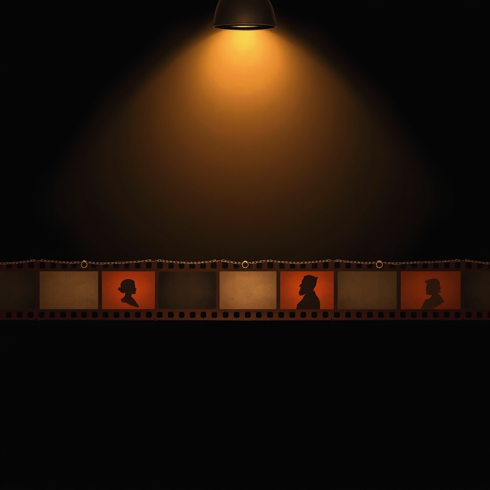
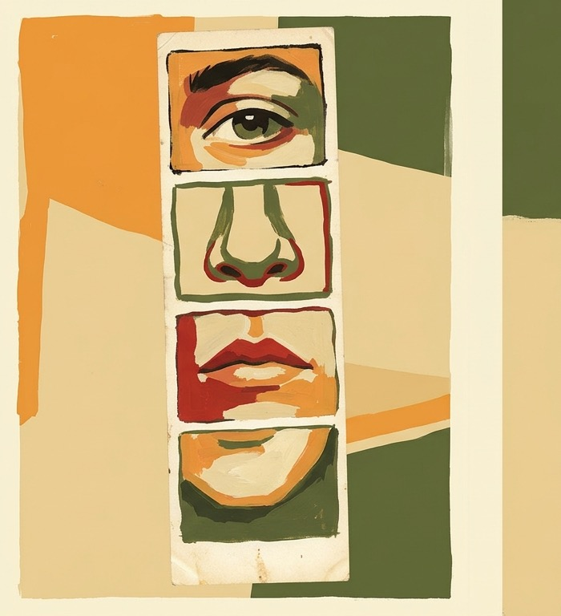
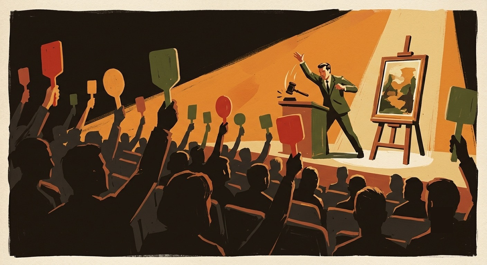

Tüm oyunlar

verandle
Yedi kelime oyunu bir arada: Harfiyat, Taraça, Avlu, Aralık, Çatı, Şömine, Parsel.
Oyna →
Atlas
Üç-e-üç ızgarada ipuçlarına uyan ülkeyi ve ili bul.
Oyna →
Sancak
Bulanıklıktan sıyrılan bayraktan günün ülkesini çıkar.
Oyna →
Karanlık Oda
Bulanık kareden günün filmini çöz; ipuçları yavaşça netleşir.
Oyna →
Jenerik
Bu oyuncunun kaç filmini hatırlayıp çıkarabilirsin?
Oyna →Montaj
On iki kare, dört film. Hangi kareler aynı filmden? Kurgu masasında ayır.
Oyna →
Film Şeridi
Bir oyuncudan başla, kadrosundan rastgele çekilen isimle zinciri halka halka uzat.
Oyna →
Çehre
Burun, göz ya da ağız kesitinden günün ünlüsünü çıkar.
Oyna →
Dört Sürü
Karışık on altı kuşu ortak yönlerine göre dört öbeğe ayır.
Oyna →
Kur
Kuşları doğru çiftlerine eşle; kurulan tuzağa düşme.
Oyna →
Dört Demet
Karışık on altı bitkiyi ortak yönlerine göre dört öbeğe ayır.
Oyna →
Aşı
Bitkileri doğru çiftlerle eşleştir, aşıyı tuttur.
Oyna →
Muzayede
Tabloya bak, ressamını ve gerçek satış fiyatını tahmin et.
Oyna →